Guía de presentación — qué pediste, qué cambió, cómo se usa paso a paso con un ejemplo, qué hay que configurar y qué queda para conversar
1. Qué pediste
"Tenemos que tener la opción de asignar tipo de gastos a cuentas contables."
— Elizabeth Perez, ticket 757, Gastos e Impuestos
Qué pasaba. Cada egreso que cargás en Comercial → Egresos lleva una
categoría (Alquiler, Servicios, Viáticos…), pero la categoría no tenía ningún
efecto en la contabilidad: al confirmar, el asiento iba siempre a la misma cuenta,
la que en Contabilidad → Configuración se llamaba Cuenta de Gastos
Operativos. El alquiler, las tasas municipales y los viáticos terminaban todos juntos en
una sola cuenta, y para que el Estado de Resultados mostrara cada gasto en su lugar había que
reclasificarlos a mano con asientos manuales.
2. Qué cambió: la cuenta la define la categoría
Antes
Todos los egresos, de cualquier categoría, se imputaban a una única cuenta de gastos
configurada en Contabilidad → Configuración.
Ahora
Cada categoría de egreso puede tener su propia cuenta contable. Al
confirmar un egreso, el asiento va a la cuenta de su categoría. Las categorías sin cuenta
siguen usando la cuenta de Configuración, que ahora se llama Cuenta de
egresos por defecto.
La regla, en una línea: cuenta de la categoría → cuenta de
egresos por defecto → si no hay ninguna, el egreso no se confirma y el sistema te dice qué
falta. Nada cambia para las categorías a las que no les asignes cuenta: siguen
funcionando exactamente como hasta ahora.
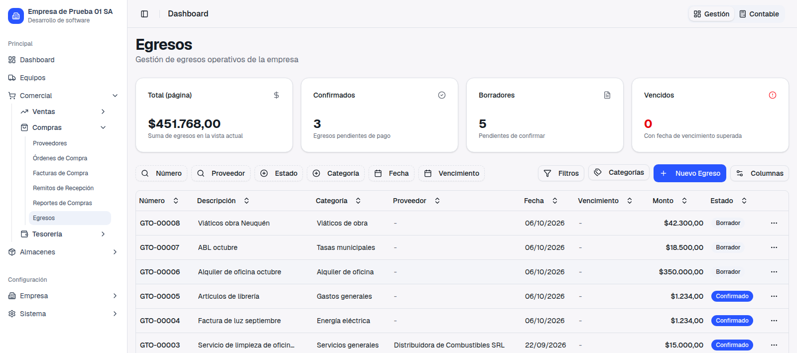
Comercial → Egresos: el botón nuevo Categorías, al lado
de Nuevo Egreso. Ya no hace falta empezar a cargar un egreso para
administrar las categorías.
3. Paso a paso, con un ejemplo
Supongamos tres tipos de gasto habituales: el alquiler de la oficina, que
tiene que ir a la cuenta Alquiler inmuebles; las tasas municipales
(ABL), que van a Tasas; y los viáticos de obra, que por ahora pueden
seguir en la cuenta general.
Abrí las categorías. En Comercial → Egresos hacé clic en
Categorías. También se abre desde
Gestionar, junto al campo Categoría cuando cargás un egreso.
Cada categoría muestra a la derecha de su nombre la cuenta a la que imputa, o
Por defecto si no tiene.
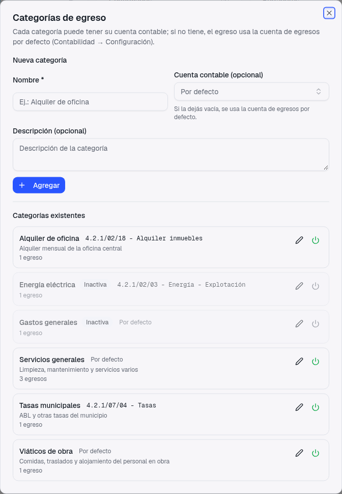
"Alquiler de oficina" y "Tasas municipales" con su cuenta; "Viáticos de obra" y
"Servicios generales", Por defecto. Las que aparecen en gris
son categorías desactivadas (datos de prueba).
Asignale la cuenta a cada categoría. Para una categoría nueva, escribí el
nombre y elegí la Cuenta contable (opcional). Para una que ya
existe, hacé clic en el lápiz, elegí la cuenta y Guardar. En el
buscador podés escribir parte del nombre ("alquiler", "viát") o del código ("4.2.1/07"). Solo
aparecen cuentas de gastos activas e imputables, así no se puede elegir una cuenta
madre por error. Si después querés que la categoría vuelva a la cuenta general, elegí
Sin asignar (usar la cuenta de egresos por defecto).
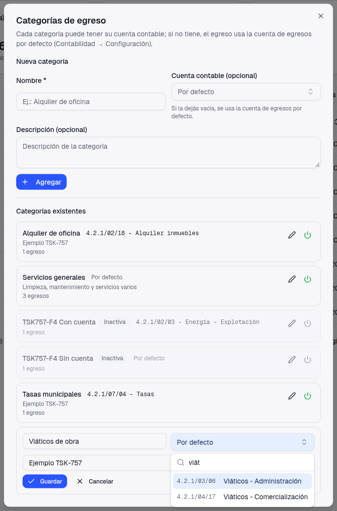
Editando "Viáticos de obra": al escribir "viát" el buscador muestra las dos
cuentas de viáticos del plan.
Cargá el egreso como siempre. Al elegir la categoría, debajo aparece a qué
cuenta se va a imputar, para que lo veas antes de guardar.
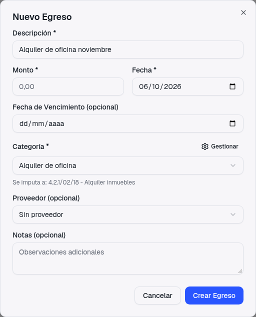
Categoría con cuenta: Se imputa a: 4.2.1/02/18 -
Alquiler inmuebles.
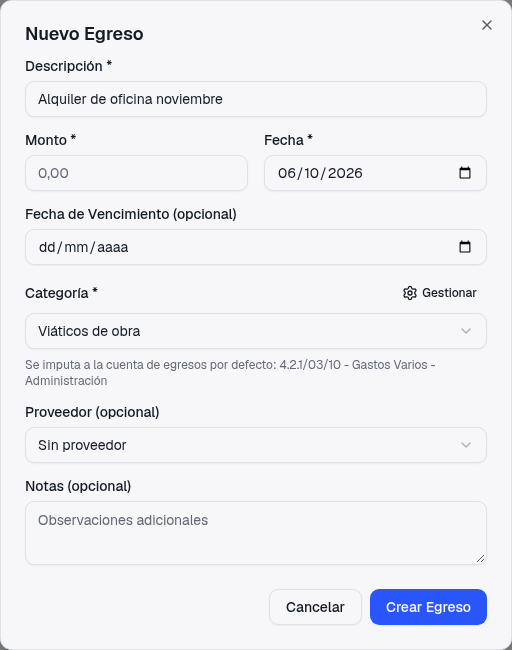
Categoría sin cuenta: Se imputa a la cuenta de egresos
por defecto: ….
Revisalo en el detalle. En Ver Detalle hay un
dato nuevo, Cuenta contable, que dice de dónde sale la cuenta:
(de la categoría) o (por defecto) mientras el egreso está en Borrador.
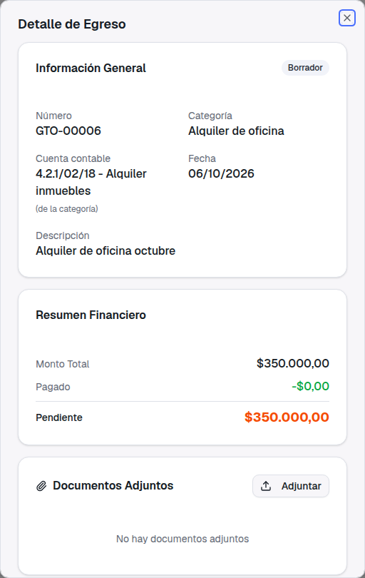
El alquiler de octubre, todavía en Borrador.
Confirmalo. Desde el menú de la fila o desde el detalle, como siempre. El
asiento va a la cuenta de la categoría contra Cuentas por Pagar, y en el detalle la cuenta
pasa a leerse del asiento, con su número.
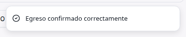
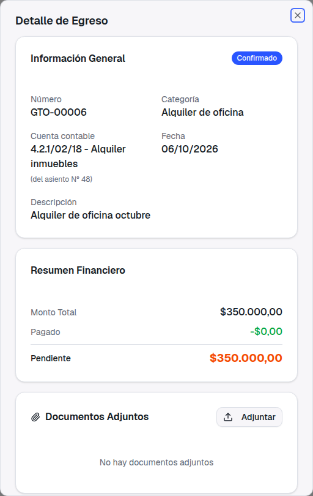
Confirmado: (del asiento N° 44). Si más
adelante cambiás la cuenta de la categoría, este egreso sigue mostrando la cuenta con la
que se registró.
El asiento que se generó:
Gasto GTO-00006 - Alquiler de oficina octubre
Debe 4.2.1/02/18 Alquiler inmuebles 350.000,00
Haber 2.1.1/02/01 Acreedores Locales 350.000,00
Y el de los viáticos, cuya categoría no tiene cuenta, fue a la cuenta de egresos por
defecto:
Gasto GTO-00008 - Viáticos obra Neuquén
Debe 4.2.1/03/10 Gastos Varios - Adm. 42.300,00
Haber 2.1.1/02/01 Acreedores Locales 42.300,00
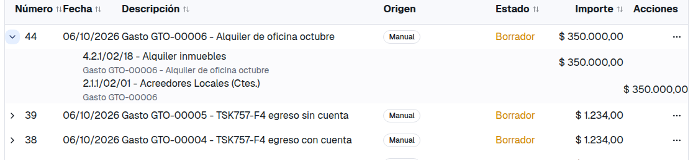
El mismo asiento en Contabilidad → Asientos. Como todos los asientos
automáticos, nace en Borrador y hay que
Registrarlo para que sume en el Mayor y el Balance.
4. Qué hay que configurar
La cuenta de egresos por defecto, como respaldo
En Contabilidad → Configuración, sección Cuentas de Resultado,
el campo que antes se llamaba "Cuenta de Gastos Operativos" ahora es
Cuenta de egresos por defecto. Se usa solo para los egresos cuya
categoría no tiene cuenta propia. Si todas las categorías que usás tienen la suya, puede
quedar vacío; si alguna no tiene, tiene que estar cargado (si no, ese egreso no se confirma y
el mensaje te ofrece las dos salidas: asignarle cuenta a la categoría o completar este
campo).
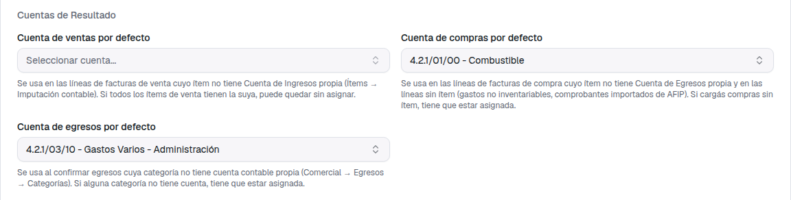
El campo renombrado y su ayuda.
Si la cuenta de una categoría se da de baja
Si desactivás una cuenta que tiene asignada alguna categoría (o la convertís en cuenta
madre), los egresos de esa categoría no se confirman hasta que la corrijas.
El sistema no los manda "en silencio" a la cuenta por defecto, porque eso
escondería el error: te muestra un mensaje con la categoría y la cuenta, y el egreso queda en
Borrador.
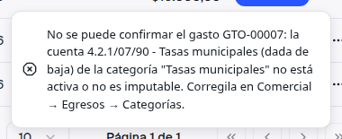
Ejemplo con una cuenta de prueba dada de baja asignada a "Tasas municipales".
5. Qué no cambia (y un aviso sobre presupuestos)
Presupuestos armados sobre la cuenta general
El presupuesto se controla por cuenta. Si hoy tenés un presupuesto sobre
la cuenta de egresos por defecto (la vieja "Gastos Operativos") y le asignás cuenta propia a,
por ejemplo, "Alquiler de oficina", los alquileres que confirmes de ahí en adelante
dejan de sumar en ese presupuesto y suman en el de "Alquiler inmuebles". Es lo
correcto contablemente, pero conviene revisar los presupuestos: bajar el de la cuenta general y
crear uno para cada cuenta nueva que quieras controlar. El aviso del 80% al confirmar también
mira la cuenta a la que va el egreso.
✓Los egresos ya confirmados no se tocan: su asiento queda como se hizo.
Asignar o cambiar la cuenta de una categoría afecta solo lo que confirmes de acá en adelante.
Si querés reclasificar lo ya registrado, se hace con un asiento manual.
✓Las categorías sin cuenta funcionan igual que antes, contra la cuenta
de egresos por defecto.
✓El Haber sigue siendo Cuentas por Pagar, y el pago del egreso por orden
de pago no cambia.
✓El gráfico del Dashboard que agrupa los egresos por categoría sigue
igual.
✓Los permisos son los mismos: quien puede crear o editar egresos puede
crear o editar categorías y su cuenta.
6. Qué queda pendiente y qué te queremos preguntar
"Impuestos": ¿a qué te referías?
El ticket se llama "Gastos e Impuestos". Con este cambio ya podés crear categorías como
"Tasas municipales", "Patentes", "Impuesto inmobiliario" o "Ingresos Brutos" y mandar cada una
a su cuenta de impuestos. Lo que el egreso no hace es discriminar IVA ni
percepciones: registra un importe único. Si un comprobante trae IVA discriminado, la forma
correcta es cargarlo como factura de compra (sin ítem, si no es mercadería),
que sí separa el IVA crédito fiscal y las percepciones y alimenta el Libro IVA Compras.
¿Era eso lo que buscabas, o "Impuestos" apuntaba a otra cosa (por ejemplo, IVA en los
egresos, o los impuestos bancarios, que ya tienen cuenta por concepto en los movimientos de
fondos)? Con tu respuesta vemos si hace falta algo más.
¿Cuentas de activo en las categorías?
Por ahora la categoría solo admite cuentas de gastos. Si cargás como egreso
cosas que en realidad son activo (un seguro anual pagado por adelantado, anticipos de
impuestos), avisanos y lo ampliamos.
Centro de costo en los egresos: es el ticket 738, que viene a continuación
y se apoya en esto mismo (la línea del gasto del asiento quedó preparada para llevar el centro
de costo).
En el celular la ventana de categorías se ve bien, pero el listado de
Egresos todavía se corre hacia el costado por la paginación de las tablas; ese arreglo es
general para todos los listados y llega con otra entrega que está en revisión (ticket 726).